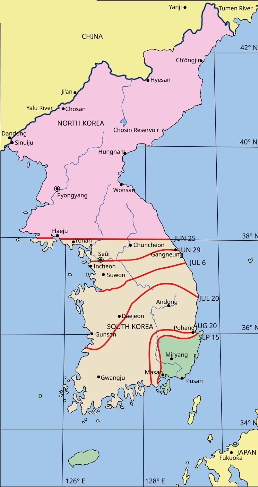

You're a war correspondent sorting the evidence. For each part: study the page on the left → get the check right → write 1–2 sentences when asked. Done = 5 green parts, then turn in at the bottom.
Content note: War, prisoners, and refugees. One leaflet is enemy propaganda and says things that were not true.
Word help (tap to open)
- 38th parallel = the line that split North and South Korea in 1945
- UN forces = troops from 16 countries, led by the U.S.
- Containment = stopping communism from spreading to new countries
- POW = prisoner of war
- Stalemate = neither side can win
- Armistice = a deal to stop fighting (not a peace treaty)

Click the page to make it bigger.
Turn in your work
Your work saves on this device, so you can come back later. Your teacher sees it after you turn it in.
Maps: "Korea War Phase I" (CC0) and "Korea War Phases II" (CC BY-SA 3.0), by Wikimedia Commons user 下一次登录 (a mislabeled scale bar was covered); "North Korea–South Korea Boundary," U.S. Department of State, 1962 (public domain). Leaflets: Busan Modern History Research Institute collection via the Korea Copyright Commission (CC BY 4.0). Photos: Truman and MacArthur at Wake Island, Oct. 15, 1950, U.S. Army Signal Corps / Truman Library; girl and brother at Haengju, June 1951, Maj. R. V. Spencer, U.S. Navy / National Archives (public domain).